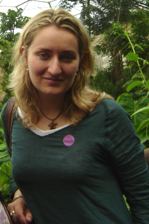
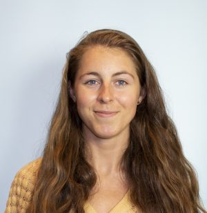

Research Team & Collaborators
Postdocs & Students
I don't currently have any students, but I am looking for funding to appoint a PhD student next year. Please get in touch if you are interested.
Rungtip Wonglersak (2016)
Rungtip did a masters research project investigating the effects of climate change on ecosystems using the Madingley Model. Rungtip is currently finishing her masters course in Biodiversity, Evolution and Conservation at University College London.
Laura Bentley (2015)
Laura did an internship at WCMC, using the PREDICTS Project data to investigate whether responses of species to land use vary dependding upon trophic level. Laura has just finished a masters course at Imperial College London, and is about to start a PhD at the University of Cambridge.
Martin Jung (2014)
While at UNEP-WCMC, I co-supervised Martin's masters project at the Centre for Macroecology, Evolution and Climate at Copenhagen University. He compared the estimates of the effects of land use made by the models of the PREDICTS Project with new data he collected in Kenya and Tanzania. A manuscript from his project is currently under review. Martin is currently studying for a PhD at the University of Sussex, investigating the effects of different land systems on biodiversity.
Katie Threadgill (2014)
Katie did an internship with me at UNEP-WCMC collating data on biodiversity before and after a land-use change. Katie is now doing a PhD in York University
Rebecca Senior (2013)
Rebecca did an extended internship at UNEP-WCMC, working on various sub-projects within the PREDICTS Project, notably an analysis of changes in the functional structure of plant communities in response to land use, from which a manuscript is in preparation. Rebecca is currently working toward a PhD at Sheffield University, studying the effects of logging on local climatic conditions and amphibian biodiversity.
Edwin Pynegar (2012)
Edwin did an internship at UNEP-WCMC, in which he collected data with which to evaluate the predictions about organism allometries made by the The Madingley Model and contributed to the early data collection for the PREDICTS Project. Edwin is now studying for a PhD at Bangor University, assessing the effectiveness of Payments for Ecosystem Services schemes in Bolivia.
Abigayil Blandon (2012)
Abigayil did an internship at UNEP-WCMC, contributing to the early data collection of the PREDICTS Project. Abigayil currently works for the UK's Joint Nature Conservation Committee.
Robert Wilson (2011)
While at UNEP-WCMC, I co-supervised Robert's masters project with the now-discontinued Mathematics in the Living Environment (MILE) Programme at the University of York. Robert's project investigated spatial patterns in the average body mass of amphibian communities in Europe. Robert did a PhD and is now a post-doc at the University of Strathclyde.
Main Collaborators
Andy Purvis

Andy is the Principal Investaigator of the PREDICTS Project, on which I used to work full time. I am now a project partner on PREDICTS, and Andy and I still collaborate on a number of projects, not least writing up many of the old PREDICTS analyses. Andy is based at the Natural History Museum in London.
Ben Collen

Ben is the Principal Investigator on the Dynamics of African Ecosystems Project, on which I am Co-investigator. Ben is based at the Centre for Biodiversity and Environment Research at UCL.
Lizzie Boakes

Lizzie works on the Dynamics of African Ecosystems Project. Lizzie is based at the Centre for Biodiversity and Environment Research at UCL.
Mike Harfoot

Mike ‒ among many other things ‒ was one of the developers of the Madingley Model. We are still collaborating on various studies using this model, and also on some work comparing the prediction of the Madingley Model with those made by the PREDICTS models. Mike is based at the United Nations Environment Programme World Conservation Monitoring Centre in Cambridge.
Sam Hill
Sam and I worked together on the PREDICTS Project, on which Sam still works full time. We are still collaborating on a study from the first phase of PREDICTS, and also on the comparison of predictions made by the Madingley and PREDICTS models. Sam is based mainly at the Natural History Museum in London.
Ralf Seppelt
Ralf was the leader of a joint iDiv-SESYNC workshop series aiming to understand the trade-offs between biodiversity conservation and agricultural production. We are still working on the final paper from this work. Ralf is based at UFZ in Leipzig.
Piero Visconti

Among his many projects, Piero does some work using the Madingley Model. More generally, Piero and I have a lot of shared research interests around understanding human impacts on ecological communities. Piero is now based jointly at the Zoological Society of London and at the Centre for Biodiversity and Environment Research at UCL.
Lawrence Hudson

Lawrence and I worked together very closely for several years on the first phase of the PREDICTS Project. We are still collaborating on several manuscripts from this phase of the project. Lawrence is based at the Natural History Museum in London.
Jörn Scharlemann
Jörn supervised my early post-doctoral work at the United Nations Environment Programme World Conservation Monitoring Centre, investigating the role of traits in mediating the response of bird species to land use. Jörn was also involved in the early development of the Madingley Model. We are now collaborating on a project to include the effects of bushmeat harvesting in the Madingley Model. Jörn is based at the University of Sussex.
Simon Ferrier
Simon and I have collaborated for several years on modelling of biodiversity responses to human pressures, mostly through enlightening discussions. Most recently, I have been using Simon and his team's downscaled land-use data to estimate the status of biodiversity in ecological communities. Simon is based at CSIRO in Canberra, Australia.
Derek Tittensor

Derek was another of the original developers of the Madingley Model. We are still working on some studies using the model. Derek is based at the United Nations Environment Programme World Conservation Monitoring Centre and at Dalhousie University in Halifax, Canada.
James Rosindell

James is currently doing some work with the Madingley Model, with which I have been helping a little. James is based at Imperial College London.
Chase Mendenhall
Chase and I were both members of the joint iDiv-SESYNC workshop series looking at trade-offs between biodiversity and food production. More recently, we have been exploring other ways to collaborate, but haven't established anything yet. Chase is based at the Centre for Conservation Biology at Stanford University.
Stu Butchart
Stu and I collaborated some years ago, using his data on traits of bird species to understand how these traits affect the way that birds respond to land use. We are planning to do some more work using these data in future. Stu is based at BirdLife Interantional in Cambridge.
Çağan Şekercioğlu
A few years ago, Çağan and I collaborated, using his data on bird diet in my study that assessed how bird traits affected their response to land use. We are planning to do some more work using these data in the coming years. Çağan is based at the University of Utah.